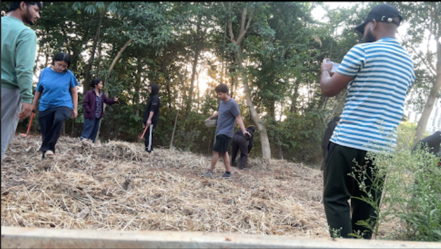
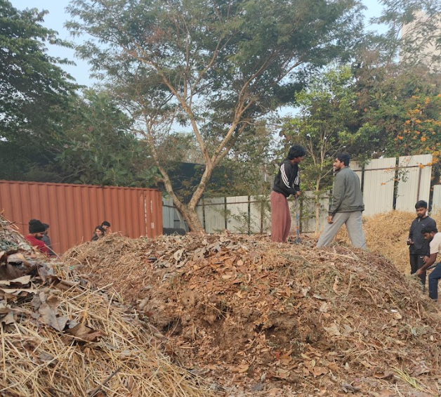
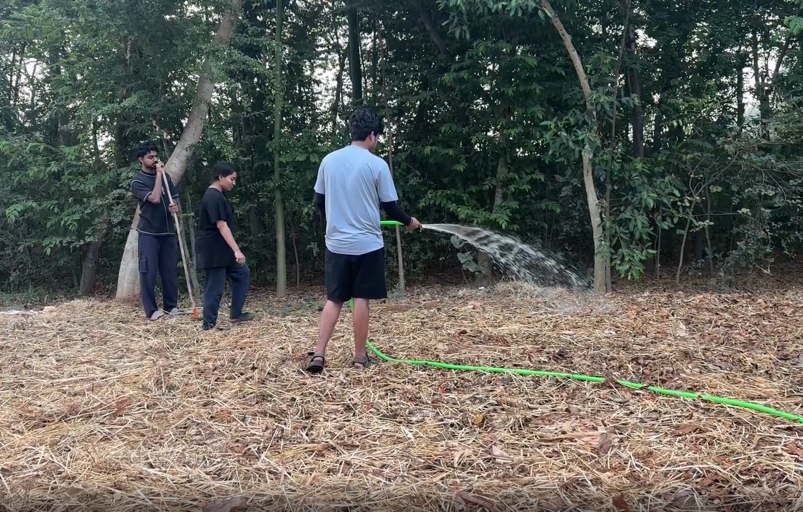
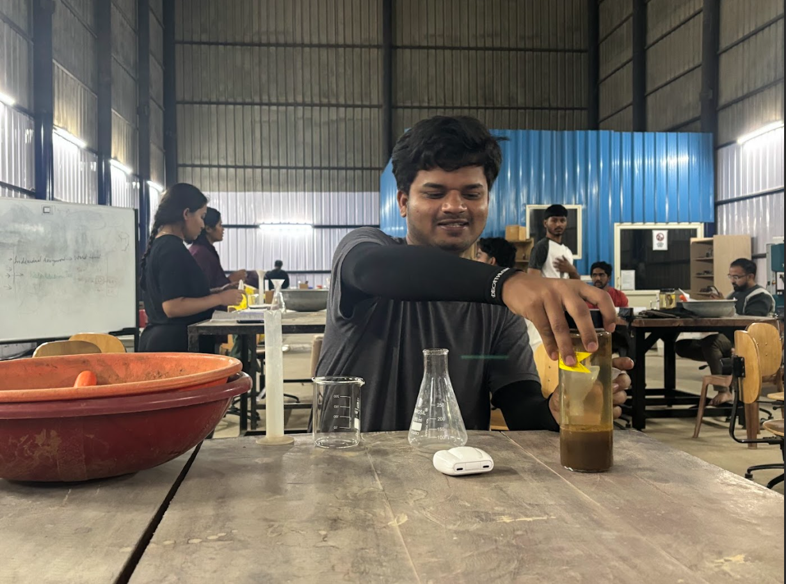
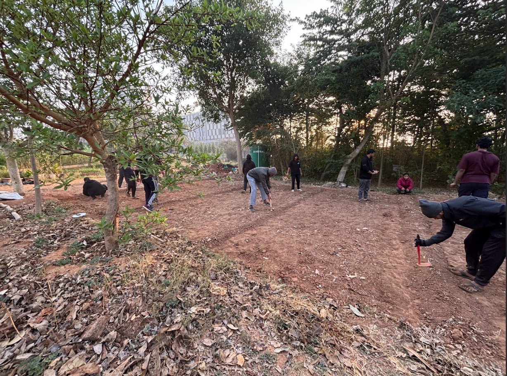
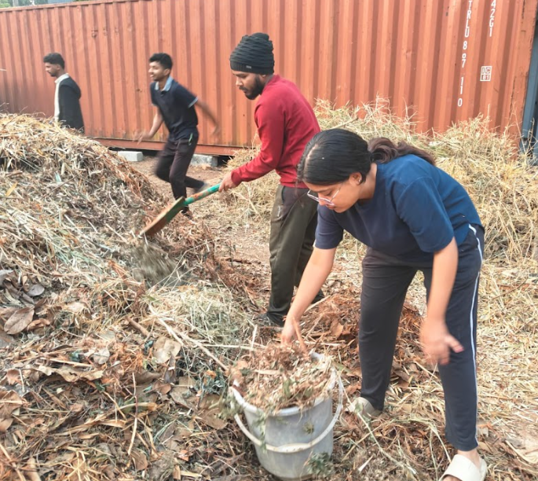
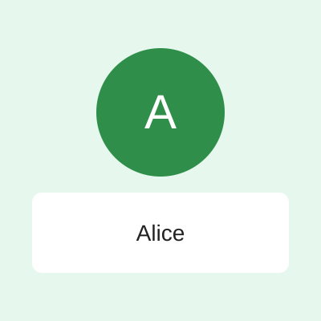
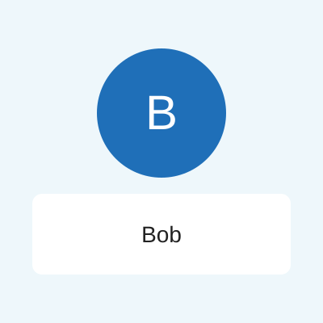
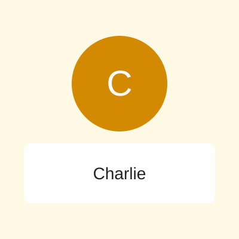
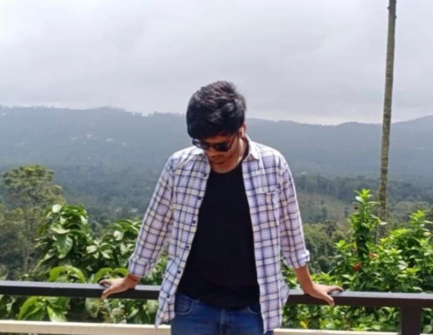

Permaculture
Design ecosystems that mimic nature to boost resilience and reduce inputs.
A short group assignment site showcasing practical, sustainable growing methods and resources.
Explore MethodsWe already produce enough food to satisfy global demand, but it comes at the cost of risking the food security of future generations, as well as causing environmental damage and wasting resources. Organic farming balances productivity with sustainability. It may not completely replace conventional farming, but it will lead the future of agriculture.
Selected videos related to sustainable growing (uploaded to YouTube) and a photo gallery below.
Neem powder mixing and mulching
Hands-on Farming: Mulching and Cocopeat Mixing
CRX Activity – Bringing Full Energy to Sustainable Farming






Design ecosystems that mimic nature to boost resilience and reduce inputs.
Integrate trees into farms to improve soil, biodiversity, and carbon storage.
Grow plants in nutrient solutions to save space and water when done sustainably.
Use stacked systems for urban production to reduce land use and food miles.

Content

Content

Videos & Photos

Technical